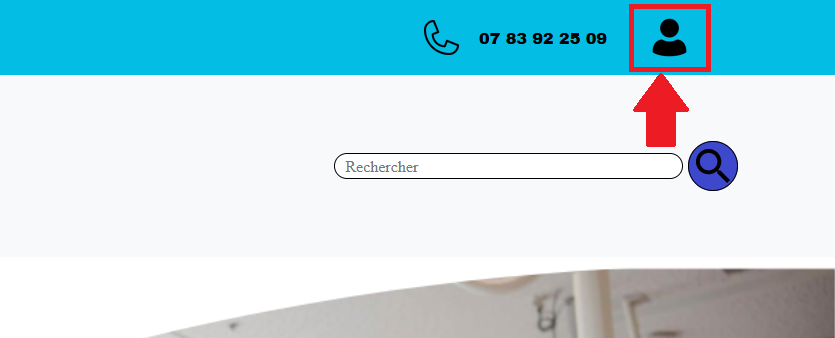
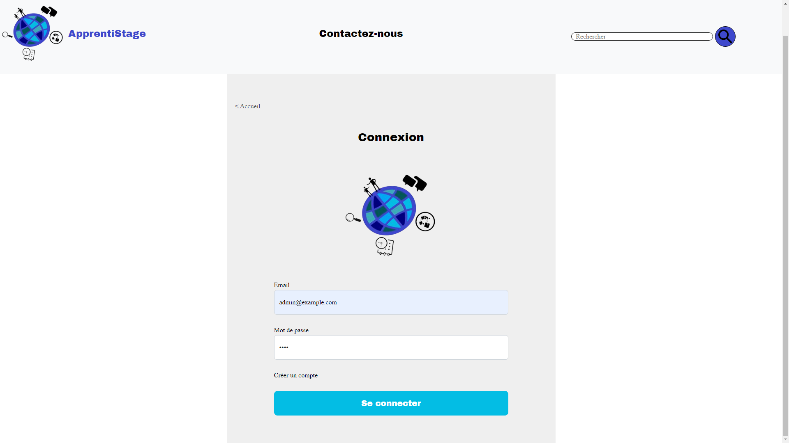
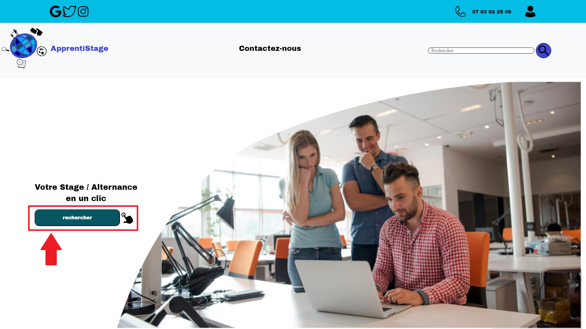
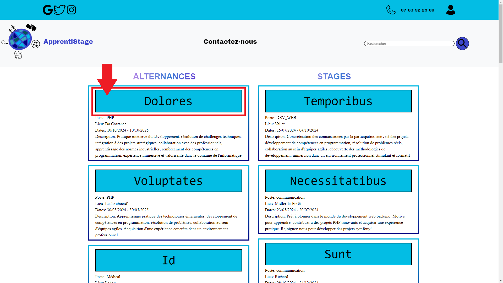
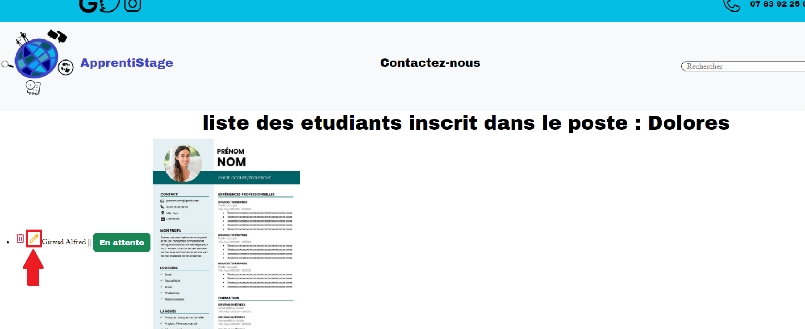
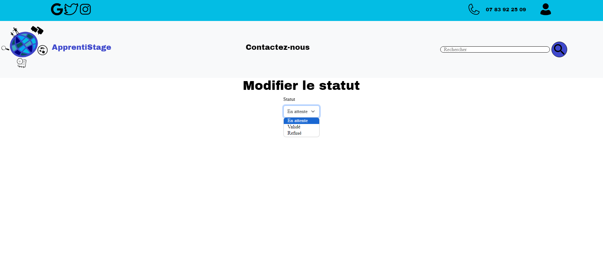
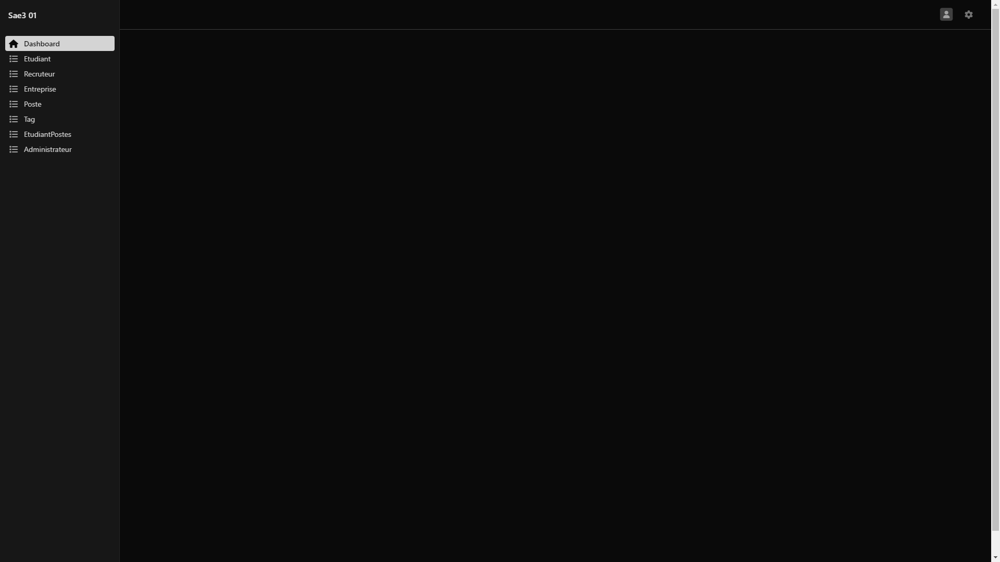

Tutoriel : Partie administrateur de notre site
Sommaire :
1. Se connecter en tant qu'administrateur :
En arrivant sur la
page d'acceuil
cliquez en haut a droite sur l'icône de profil montré ci-dessous :

Il faudra ensuite vous connecter à l'aide de votre compte administrateur.
Si vous n'en n'avez pas, vous pouvez utilisez cela :
E-mail : admin@example.com
Mot de passe : test

Une fois connecté, vous allez être redirigé vers la page d'accueil du
site.
Vous êtes maintenant connecté en tant qu'administrateur
2. Lorsque vous êtes connectés en tant qu'administrateur plusieurs
fonctionnalités sont disponibles comme :
Supprimer les demandes de postes
Aller sur la
page d'accueil et
cliquer sur le bouton rechercher :

Sur cette page, vous verrez tous les postes disponibles, si vous cliquez
sur l'un d'entre eux, vous pourrez constater les demandes qui ont été
formulé par des étudiants pour ce poste :


Afin de supprimer la demande de poste, vous devez cliquer sur l'icône de
poubelle comme sur l'image ci-dessous :

Modifier les statuts des demandes de postes
Afin du statut de la demande de poste, vous devez cliquer sur l'icône de
crayon comme sur l'image ci-dessous :

Vous arriverez en suite sur cette
page
ou vous pourrez modifier le statut

Vous savez maintenant comment modifier le statut d'une demande de poste et
également la supprimer
Accéder au Dashboard qui permet de gérer la base de données
Afin d'accéder au
dashboard en
cliquant sur l'icône profil :
Vous arriverez sur cette page :

Sur cette page, vous pouvez gérer toutes les entités de la base de données
Voici une vidéo qui vous résume toutes les fonctionnalités du Dashboard :